Reference · 跟著真實 DevTools 找到 SDK 自動送出的 measurements
本次在已登入的 Foreman Stage 實際捕捉 Faro Web SDK 2.9.0 的 INP、CLS、LCP。先走操作，再解讀值；最後核對為何屬於 automatic telemetry。
照著操作 · Payload 查表 · INP 因果拆解 · 自動來源證據 · 責任邊界
Evidence Card：完整條件、來源、限制 · 本輪 Network 原始紀錄（已移除身分與 headers 值）
頁面載入、使用者互動、畫面位移都能被 Browser 觀測。啟用的 Web Vitals instrumentation 使用這些觀測計算指標，自動交給 Faro measurement API，再由 transport 組成 HTTP body。你不必替每個效能值寫 pushEvent()。
Browser 的效能觀測
→ Web Vitals callback 計算／回報
→ Faro measurement API
→ transport 批次組成 body.measurements[]
→ POST /alloy「自動」有條件：SDK 初始化、對應 instrumentation 啟用、Browser 支援與回報時機。不是每一筆 POST 都會同時帶 INP、CLS、LCP；也不能光看欄位名稱就證明 callback 是自動呼叫。
使用課程的測試頁面，避免操作會提交業務資料的按鈕。本輪 Chrome desktop viewport 1440 × 960；值只代表這個受控 session，不拿來評定正式產品效能。
開頁面 → 開 DevTools → Network。先設定錄製、Preserve log 與 alloy filter，清除舊紀錄，再 reload。使用未加 business tracking 的 hamburger 產生一次可見互動。
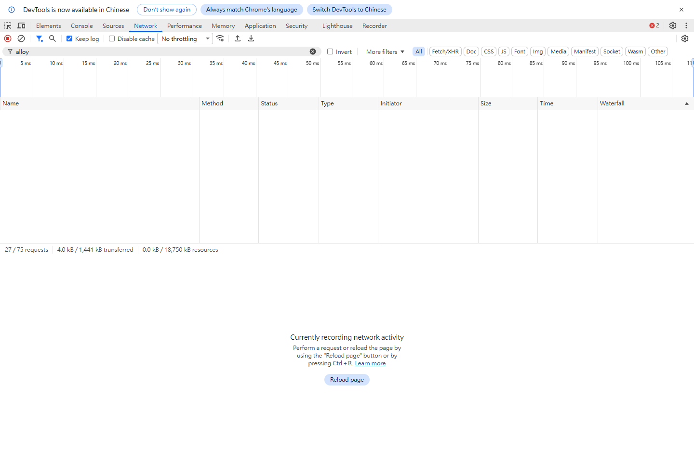
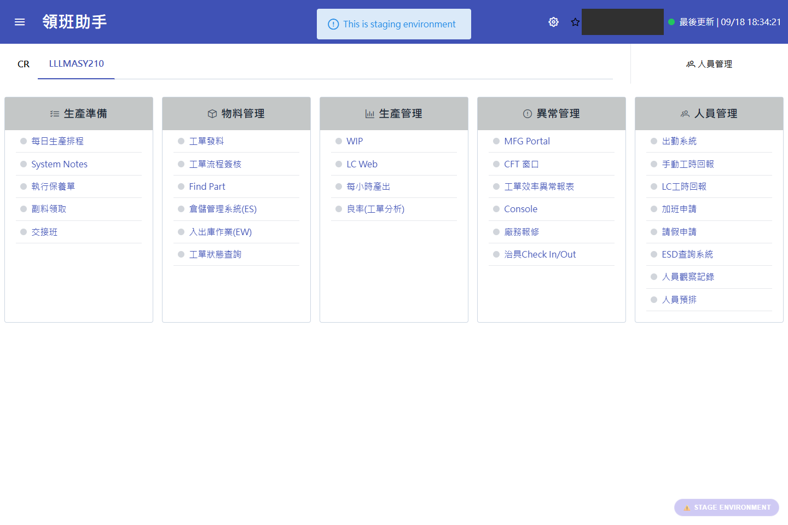
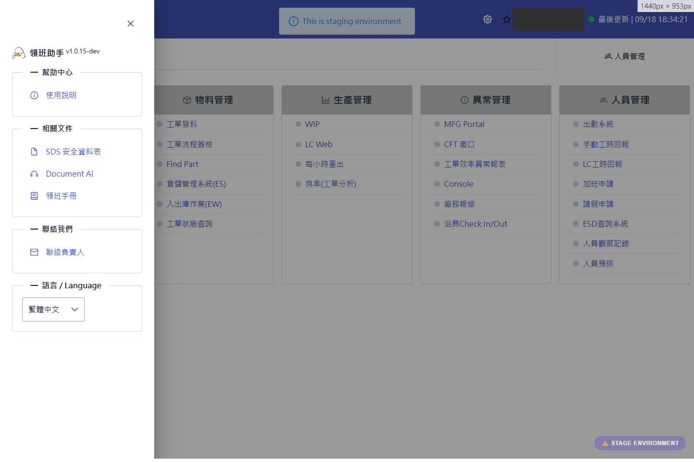
INP／CLS 的回報可能要等頁面生命週期結束。此輪以 reload 讓舊 document 回報；如果當下沒有看到，保留紀錄、核對 instrumentation 與互動條件，不能直接宣稱 SDK 沒有收集。
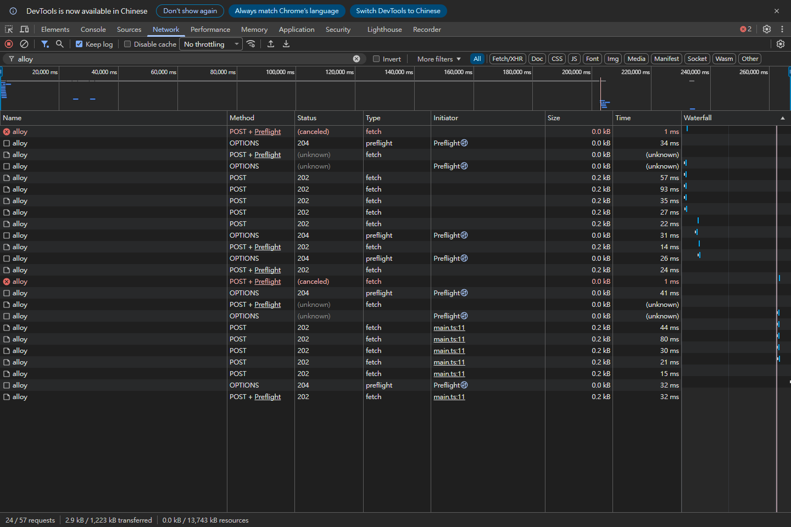
54748.145 已建立 POST body，但 reload 時 canceled，沒有 HTTP response。另有相同 metric id 的 54748.146，接收結果未知；不推測是 retry，也不算成新互動。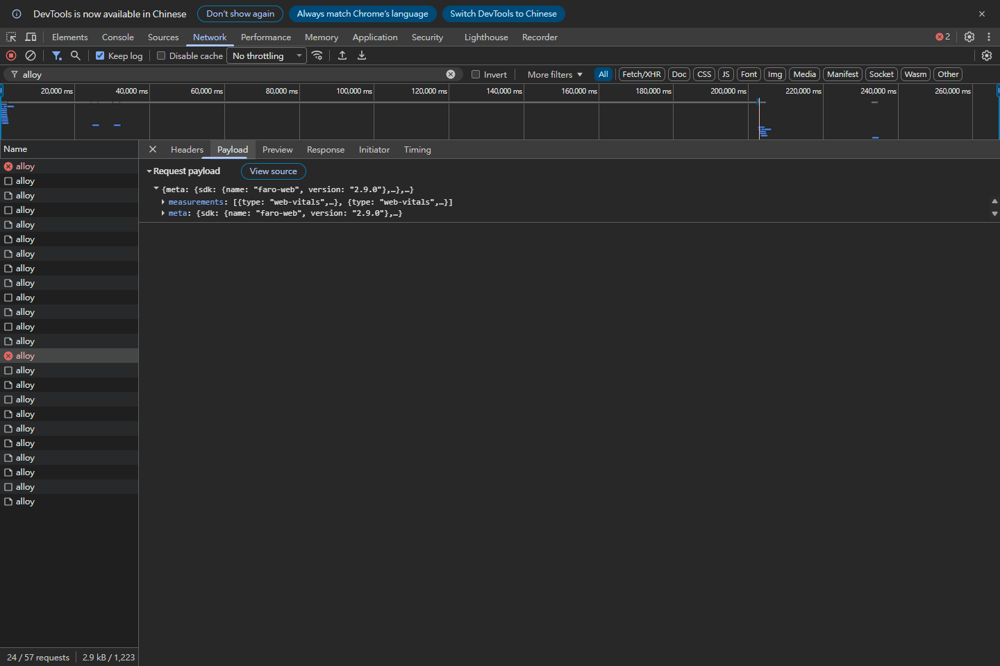
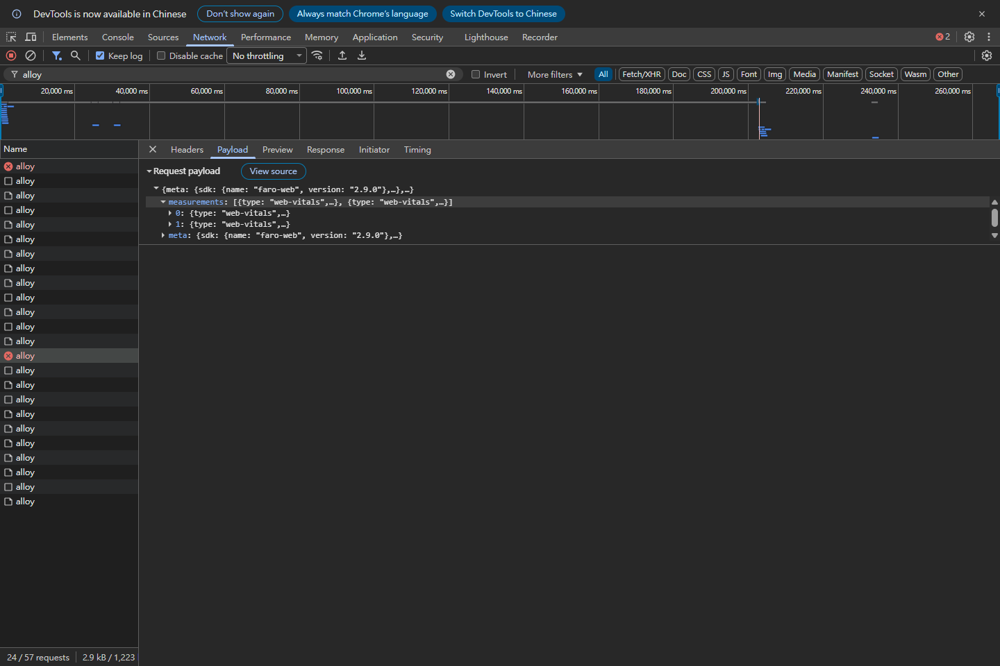
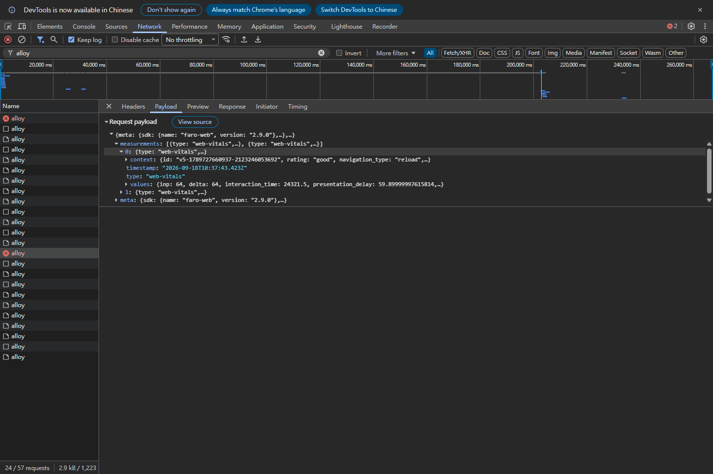
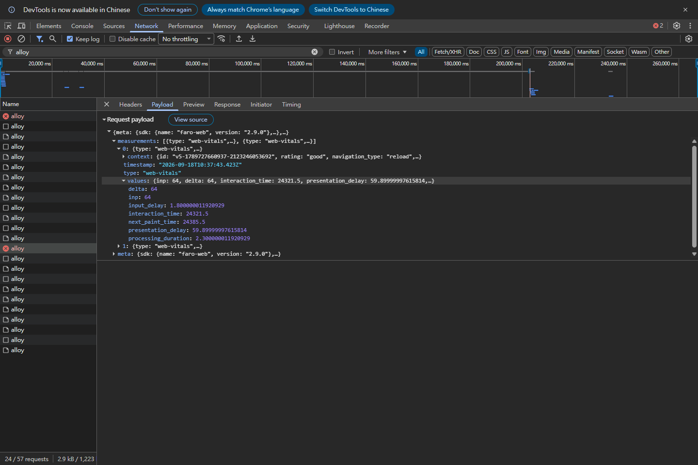
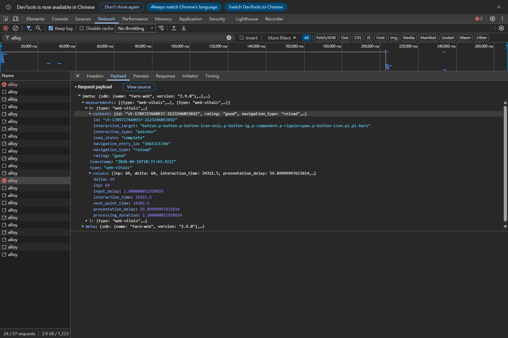
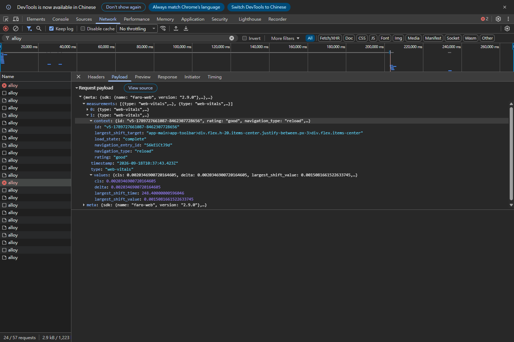
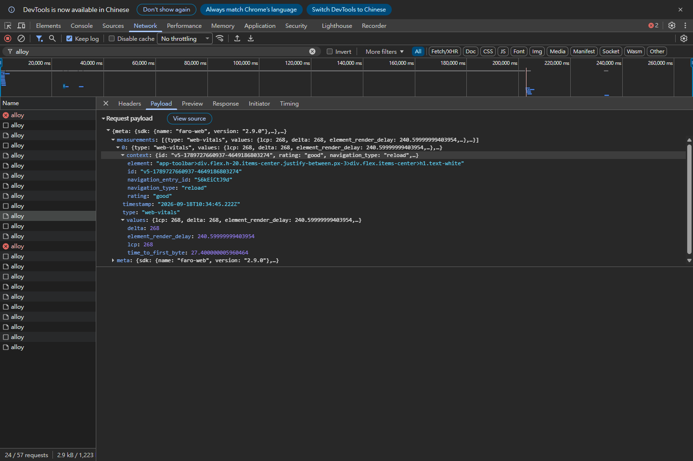
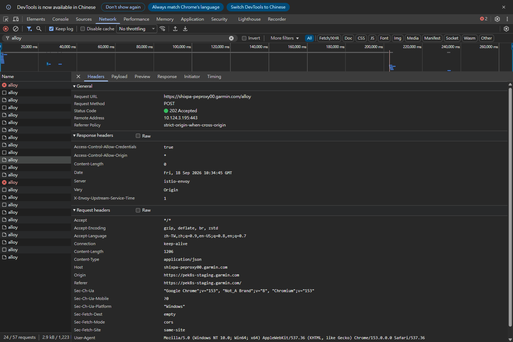
本輪 LCP request 54748.143 回覆 202；INP／CLS 沒有接收成功證據。measurement 來源、HTTP 接收、後端儲存是不同證據層次，必須分開判斷。
以下摘錄來自同一筆 INP／CLS body，保留實際數值；省略其他 measurement 欄位與 meta。完整內容請查原始紀錄，不把摘錄當整筆 request。
{
"measurements": [
{
"type": "web-vitals",
"values": {
"inp": 64,
"delta": 64,
"input_delay": 1.800000011920929,
"processing_duration": 2.300000011920929,
"presentation_delay": 59.89999997615814,
"interaction_time": 24321.5,
"next_paint_time": 24385.5
},
"context": {
"rating": "good",
"navigation_type": "reload",
"load_state": "complete",
"interaction_type": "pointer",
"navigation_entry_id": "S6kEiCtJ9d"
}
},
{
"type": "web-vitals",
"values": {
"cls": 0.0020346900720164605,
"delta": 0.0020346900720164605,
"largest_shift_time": 248.40000000596046,
"largest_shift_value": 0.0015081661522633745
},
"context": {
"rating": "good",
"navigation_type": "reload",
"load_state": "complete",
"navigation_entry_id": "S6kEiCtJ9d"
}
}
]
}| 找哪裡 | 讀成什麼 |
|---|---|
measurements[] | 此 body 的 measurement 集合；index 是陣列位置。 |
type: "web-vitals" | measurement 種類，不是 custom event 的 name。 |
values | 數字：主指標、變化量與 attribution 時間。 |
context | 背景：rating、navigation 類型、互動／元素資訊。不是業務語意自動補齊。 |
id、navigation_entry_id | 原始 context 中可用來辨認 metric／navigation；不是 app user id。 |
timestamp | 本筆回報的時間；別和相對 navigation 的 interaction_time 混用。 |
delta | 相對前次回報的變化。本輪等於主值，不保證每次都相等。 |
INP／LCP 與 constituents 是毫秒；CLS 是無單位分數。浮點尾數不是另一個延遲來源。optional attribution 欄位會依指標、版本與資料存在而變；此版還有 truthiness guard，零值可能省略，不能拿「欄位沒出現」等同「沒有該階段」。
INP 描述互動到下一次 paint 的延遲。體感是「我點了，畫面多久才回應？」它不是 API round-trip，也不代表所有非同步業務工作完成。此輪被選為 INP 的 target 是打開選單的 hamburger，不能把最後一次關閉選單當成這個值。
使用者互動
↓ input_delay ≈ 1.8 ms
Browser / event loop 等待，還不能開始處理
↓ processing_duration ≈ 2.3 ms
JavaScript 事件處理
↓ presentation_delay ≈ 59.9 ms
處理結束，Browser 準備並呈現下一次畫面
↓
使用者看到下一次 paint
合計 ≈ 64 ms（values.inp）這能告訴你本次時間主要落在哪段，但 presentation_delay 大並不能單獨證明是哪個 CSS、rendering 或主執行緒工作造成；追 root cause 需要另外的 performance evidence。interaction_time 與 next_paint_time 的差也為 64 ms，它們是相對時間，不是 UTC timestamp。
定義與回報條件：官方 INP 說明。
CLS：衡量未預期的版面位移，體感是想點的內容突然挪位置。此輪分數約 0.00203，不是 0.203% 也不是毫秒。largest_shift_value 約 0.00151 是單次最大 shift，不等於整個 CLS；largest_shift_target 只指出元素位置，不建立原因。
LCP：最大可見內容的呈現里程碑，體感是主要內容什麼時候出現。本輪 toolbar h1 被辨認為 element，lcp 268 ms、time_to_first_byte 約 27.4 ms、element_render_delay 約 240.6 ms；不代表所有資源、所有互動或頁面業務資料都完成。
rating: "good" 是 library 對該 metric 的分類；navigation_type: "reload" 表示這輪 navigation 類型。這次測試的 good 不代表正式使用者整體都 good。
官方 CLS · 官方 LCP。本查表不延伸 Lighthouse、CrUX 或 SEO。
Payload 證明 Browser 建立了 web-vitals measurement；來源證據補上自動 instrumentation 的因果鏈。本輪只 reload、操作選單，沒有人工呼叫 Faro measurement API；部署中的 main.js 確實初始化 WebVitalsInstrumentation，並包含 INP／CLS／LCP 的 callback → corePushMeasurement 欄位映射。
另做一輪獨立 Sources 停點驗證，捕捉到部署中的 Web Vitals TTFB callback 進入 corePushMeasurement，call frame 的 arguments 是 metric values／context。這直接支撐 callback 自動呼叫的機制；不是上面 INP 64 ms 的同一次停點，Debugger 測試數值也不混入主觀測。
部署檔 source 位置與 SHA-256 · 獨立 callback 停點紀錄 · 對照同版 Faro 2.9.0 欄位映射與 預設 instrumentation 清單。
| 資料 | 誰負責／能回答什麼 |
|---|---|
| web-vitals／inp／cls／lcp | SDK 與 Browser-side automatic instrumentation：互動、呈現、位移的觀測。 |
| data-link-name → link_name | 額外 click instrumentation＋頁面標記：這個按鈕在業務上叫什麼。 |
| subsystem | 應用整合的語意：操作屬於哪個系統／區域。 |
| user context | 應用在登入等時機設定：該 session 的使用者身分；不是 Web Vitals metric id。 |
本次 hamburger 沒有 business tracking ancestor，仍能被 INP attribution 辨認；但那串 CSS selector 不會替你定義「DailySchedule」或業務 subsystem。自動有效能證據，與額外標記才有業務語意，是兩個責任。
回到你的 Network，找一筆 POST，展開 measurements 並指出 type、主值與 context。再回 Headers，說清楚你這筆 request 的接收結果；沒看到的指標就記為未觀測，不補造數值。
不能。它是 measurement，不是 custom click event；Payload 證明 body 的內容，Headers 才支撐 HTTP 結果，後端儲存需要另外的 evidence。本輪 INP／CLS 正是 canceled 的例子。
Web Vitals instrumentation 觀測 Browser 互動，不依賴業務 click 標記。data-link-name 是額外 business instrumentation 的輸入，兩者不能互相代替。